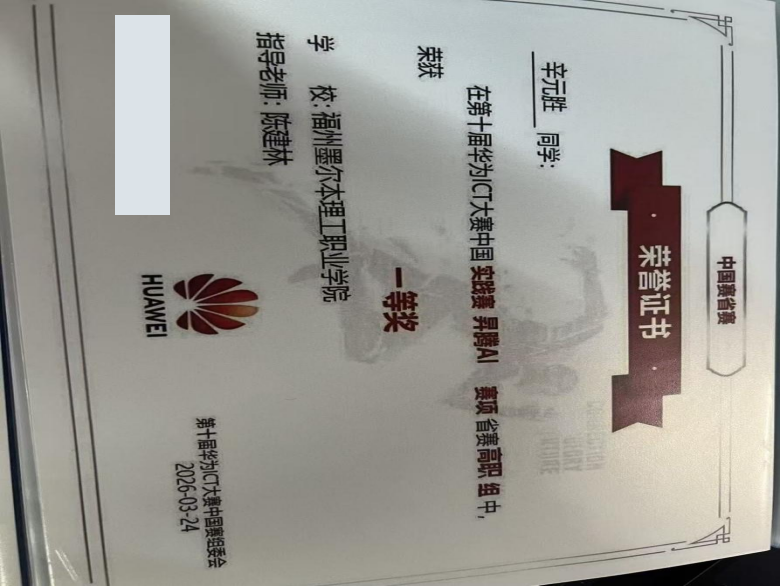
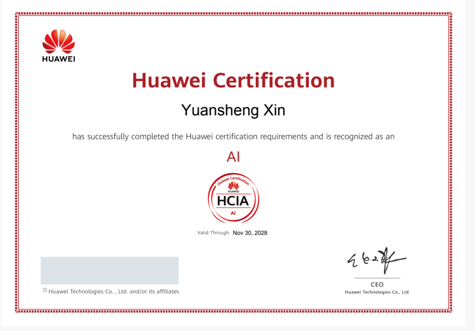
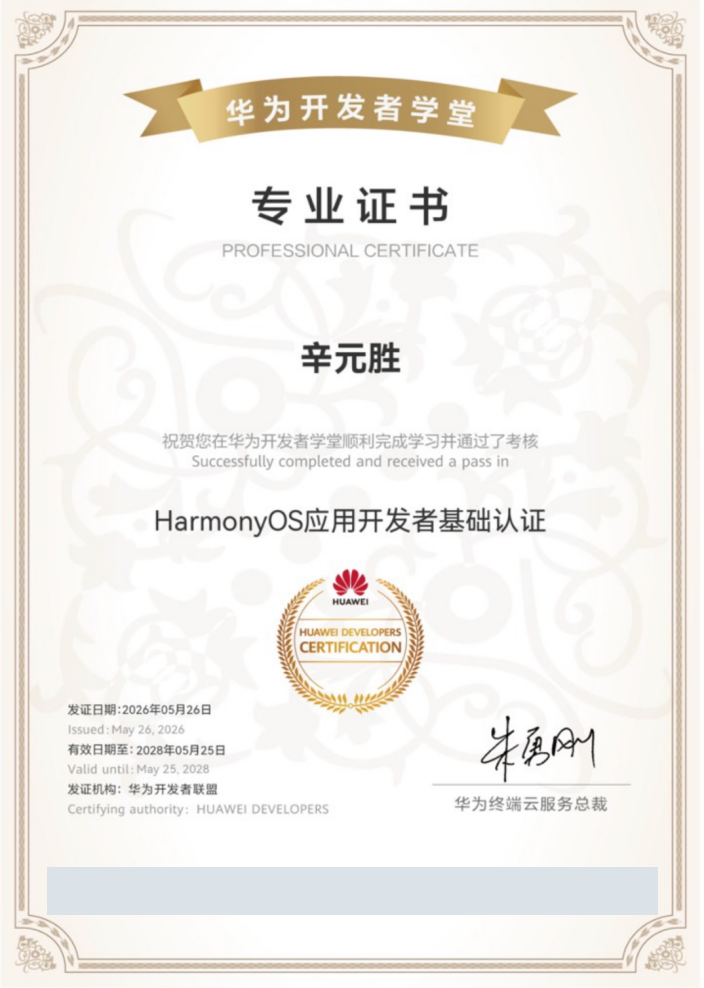

Java 后端
Java / Spring Boot 基础。参与后端接口开发、第三方 API 接入、密钥与参数配置。
01 / SKILLS
用实际项目，说明我会什么。
Java / Spring Boot 基础。参与后端接口开发、第三方 API 接入、密钥与参数配置。
MySQL、SQL、MyBatis、Linux 基础，有项目使用经历；电商助手中使用 SQLite 保存统计数据。
结合日志排查接口鉴权问题，完成应用联调、运行验证、桌面端打包及技术文档整理。
02 / SELECTED WORK
明确个人分工，保留成果与证据。
第1组组长 · 项目统筹与功能整合
整合前端、Java 后端、SQLite、Coze 与 Electron，完成从运营功能到桌面端应用的串联。
实训小组
主要功能模块
可启动桌面应用
统筹4人小组的项目整合与提交，完成首页数据总览、文案生成、图像生成、智能选品、竞品分析、AI一键生成、AI流式输出等7个模块整合。
完成Spring Boot接口、SQLite统计数据、Electron桌面端打包与运行说明，整理运行截图、工作流截图及总结报告。
形成1个可启动的AI电商运营助手。上述分工、模块及运行成果对应《计算机应用技术综合实训终结性总结报告》，不将小组成果表述为个人独立开发。
Coze 问答后端 · 整体联调
使用 Spring Boot 对接 Coze 问答能力，围绕接口、配置与日志完成联调和问题排查。
协作开发
个人分工
已解决的鉴权问题
项目保留服务启动日志、问答运行截图及分工记录，对应《B/S框架开发技术应用》实训报告。本项目尚未实现MySQL持久化，不将后续计划写成已经完成的功能。
03 / EDUCATION
专业学习与校园实践，共同积累。
计算机应用技术 · 大专
04 / CERTIFICATES
点击证书，查看原图。

中国实践赛 · 省赛高职组
发证日期：2026年3月24日

人工智能方向认证
有效期至2028年11月

华为开发者学堂
发证日期：2026年5月26日
其他荣誉：闽江大学2025年度优秀共青团员；英语翻译决赛二等奖、英语写作决赛三等奖。
05 / ABOUT ME
愿意把问题讲清楚，
也愿意把细节做扎实。
在实训中承担接口开发、整体联调及报告整理，重视清晰分工和可验证的结果。担任学习委员、团支书、学生第一党支部党务助理、2025级新生辅导员助理、主持社社长及宿舍层长，多次参与活动主持与志愿服务。
参加党基班、发展对象培训班并结业，参加闽江大学储英班，现为中共预备党员。希望把校园协作与表达经验，带入Java开发岗位的需求沟通与项目交付。
LET’S CONNECT
求职方向：Java开发 · 意向城市：福州